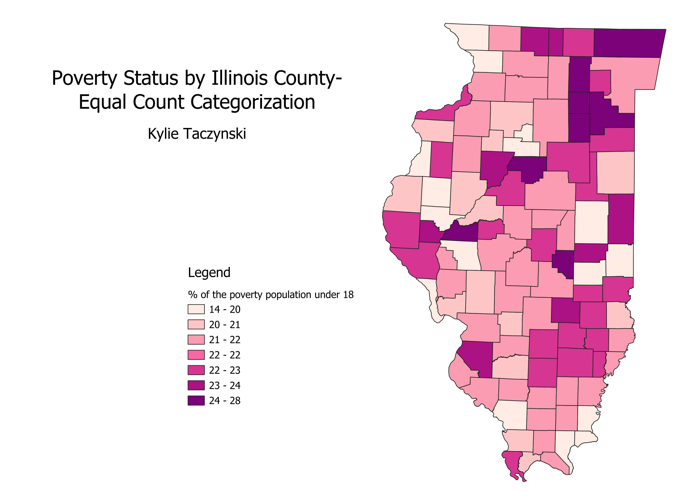

Homework 6 Part 2
Ratio Explanation
The ratio I created involves taking the count of individuals below the age of 18 with poverty status within each county and dividing it by the total count of individuals with poverty status within each IL county. Afterward, I multiplied the results by 100 to express the values as a percentage. In simpler terms, this ratio reveals the percentage of the population with poverty status that is under the age of 18.
IL Equal Count Map
Pros: These intervals do a good job of putting the values in order. Additioanlly, all the classes are represented on the map. Porbably the most visually pleasing and readable map.
Cons: The intervals are uneven and could be difficult to understand. At the extreams the intervals are the largest meaning the counties with the lowest or largest percentages are the same color as multiple others even though they have a great disparity in values.

IL Equal Interval Map
Pros: Even distributions are easy to understand. This map also highlights that many of the counties fall within a 4 percentage point range.
Cons: There might not be enough equal intervals to display detailed data, this can make it difficult to see the difference between the values of counties in the same intervals.
IL Natural Breaks Map
Pros: All the classes are represented on this map, making it easy to distinguish between the different interval groups.
Cons: The intervals are slightly strange and dont follow a pattern which could make it difficult for someone to understand the breaks.

Data used for this project
CSV dataset
Link to geoJSON